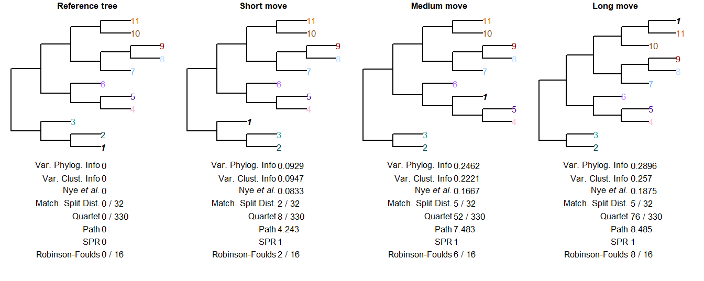
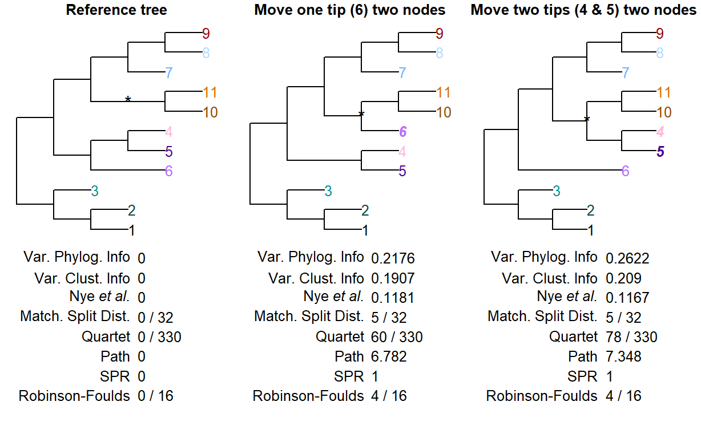
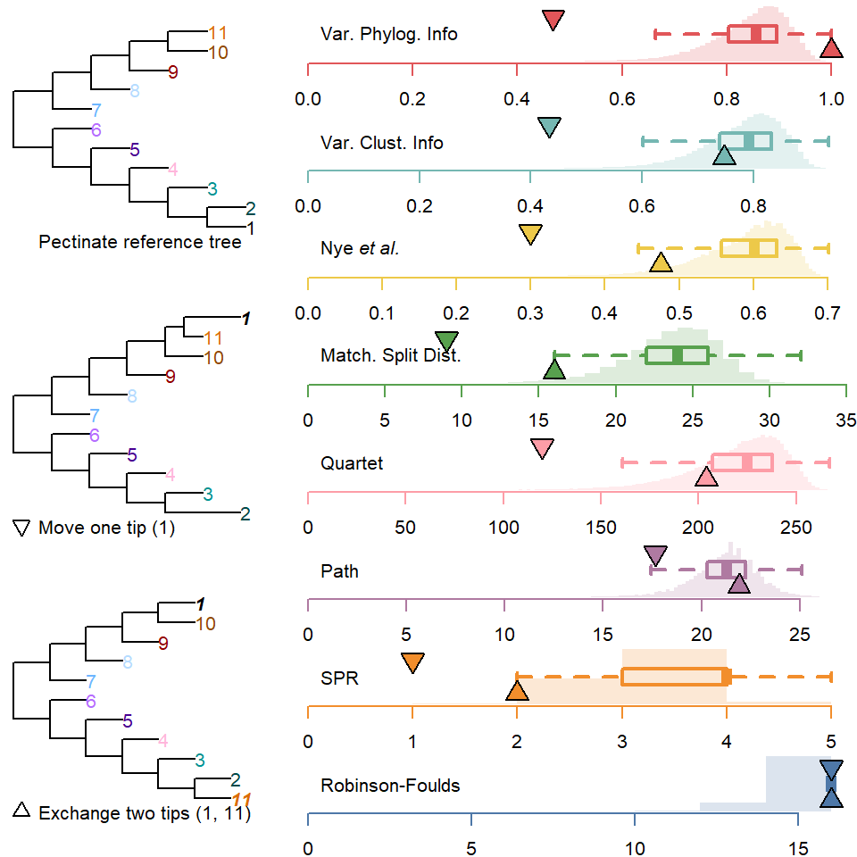
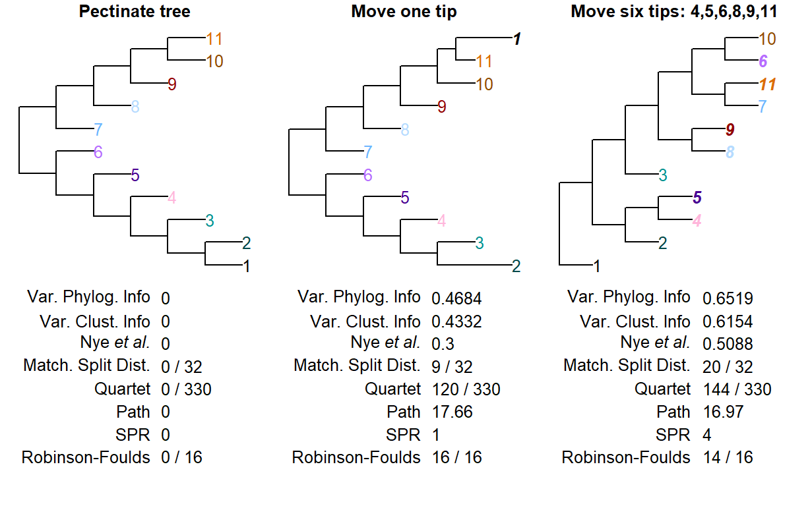
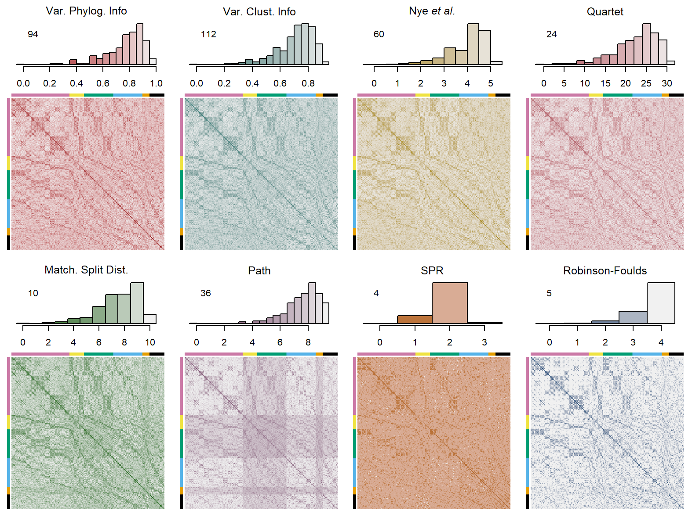
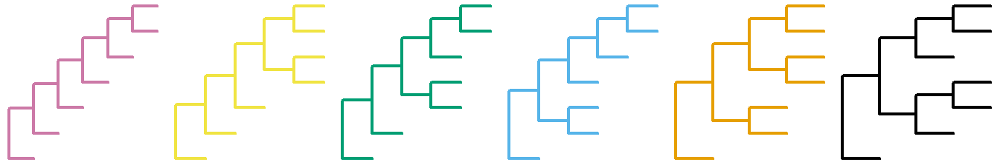
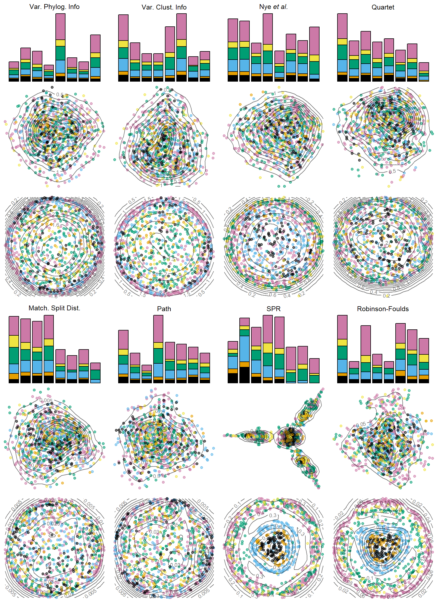
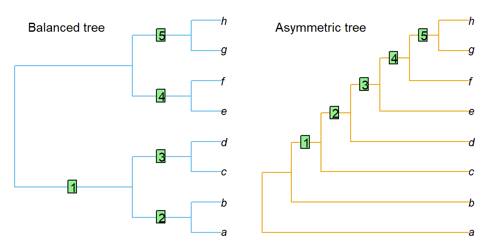

Evaluating tree distance metrics
Martin R. Smith
2019-08-28
Source:vignettes/Tree-distance-metric-evaluation.Rmd
Tree-distance-metric-evaluation.RmdMeasuring the effectiveness of tree distance metrics
The most fundamental desideratum for a tree distance metric is that it assigns higher distance scores (or lower similarity scores) to trees that are more different. A consideration of problematic cases shows that some metrics do not consistently meet this fundamental criterion.
Note that the value of the Nye et al. similarity metric has been converted to a measure of distance by subtracting its value from the maximum possible (eight).
Length of move
If trees differ only in the location of a single taxon (see taxon 1 in the trees below), then the distance between two trees should correspond to the distance that this taxon has been moved.

The subtree pruning and regrafting (SPR) distance does not distinguish between these trees, as they differ only in the placement of a single tip.
The Matching Splits metric lacks the resolution to distinguish a move of two nodes from one of three.
The Robinson-Foulds, path difference and quartet metrics, in contrast, recognize trees in which this tip has been moved further as more distant from the starting tree.
| Measure | Phylo. Inf. | MS Inf. | Clust. Inf. | Nye et al. | MS Dist | Quartet | Path | SPR | RF |
|---|---|---|---|---|---|---|---|---|---|
| Length of move | Pass | Pass | Pass | Pass | FAIL | Pass | Pass | FAIL | Pass |
Number of tips moved
Intuitively, moving a pair of tips on a tree should lead to higher tree distances than moving a single tip.
In the following situation, the Nye et al. metric assigns a higher distance to a move that relocates relocate a single tip than one that moves two tips to the same location, and the matching splits metric fails to differentiate between the two:

| Measure | Phylo. Inf. | MS Inf. | Clust. Inf. | Nye et al. | MS Dist | Quartet | Path | SPR | RF |
|---|---|---|---|---|---|---|---|---|---|
| Two-node move | Pass | Pass | Pass | FAIL | FAIL | Pass | Pass | FAIL | FAIL |
Number of moves made
Moving one taxon a specified distance ought to result in a smaller difference than moving two taxa the same distance. As a simple example, exchanging a pair of taxa represents a larger change than moving one taxon adjacent to the other.
Following on from this, moving one tip or exchanging two tips ought to result in a smaller distance than the distance expected for a pair of random trees.

A notable proportion (15.3%) of random trees receive a lower RF distance than trees that differ in the position of a single tip. The proportion remains non-trivial for the path difference (3.3%), but is below 1% for all other metrics.
Exchanging two tips generates the maximum possible value under arboreal measures, i.e. the Variation of Phylogenetic Information and Robinson-Foulds distances. As such, this simple exchange receives a higher distance than a pair of random trees would receive, overlooking the identical relationships in all non-swapped tips.
The path distance when two tips are exchanged is also higher than expected for a pair of random trees.
| Measure | Phylo. Inf. | MS Inf. | Clust. Inf. | Nye et al. | MS Dist | Quartet | Path | SPR | RF |
|---|---|---|---|---|---|---|---|---|---|
| Number of moves | FAIL | Pass | Pass | Pass | Pass | Pass | FAIL | Pass | FAIL |
Complexity of moves
As a related example, I propose that a rearrangement that requires the translocation of more than half the tips in a tree ought to result in a higher distance score than any rearrangement in which a single tip is moved:

In this example, the path metric fails this test.
| Measure | Phylo. Inf. | MS Inf. | Clust. Inf. | Nye et al. | MS Dist | Quartet | Path | SPR | RF |
|---|---|---|---|---|---|---|---|---|---|
| Complexity | Pass | Pass | Pass | Pass | Pass | Pass | FAIL | Pass | FAIL |
Saturation
A distance metric should distinguish slightly-perturbed trees from random trees and those that are more different from the starting tree than expected by chance.
The Robinson-Foulds metric can reach its maximum value when a single taxon is relocated from the most basal to the most derived point of a pectinate tree, representing a maximal value despite retaining relationship information about all other taxa. It thus lacks the capacity to distinguish a random tree from one that is selected to maximise the distance from the comparison tree.

| Measure | Phylo. Inf. | MS Inf. | Clust. Inf. | Nye et al. | MS Dist | Quartet | Path | SPR | RF |
|---|---|---|---|---|---|---|---|---|---|
| Saturation | Pass | Pass | Pass | Pass | Pass | Pass | Pass | (?) | FAIL |
Heterogeneity of tree space
Tree distances correspond to a non-Euclidian space comprising all possible trees. The nature of this space is difficult to visualize, but it is desirable that such a space is uniform and does not exhibit islands (Bogdanowicz & Giaro, 2012).
Kendall & Colijn (2016) evaluate tree metrics by examining the properties of the complete tree space for all 945 rooted six-tip trees. A rooted tree is equivalent to an unrooted tree with an additional tip added at the position of the root; as I am considering metrics on unrooted trees, I replicate and expand the analysis of Kendall & Colijn (2016) on all 945 unrooted seven-tip trees.
The matrix plots below depict, by colour intensity (see histograms above for key), the distance between each pair of trees.
Histograms are annotated with the number of unique values observed for each metric. Rows and columns correspond to each of the 945 unrooted 7-tip trees, sorted according to their topology; the coloured bars in the margins correspond to the six distinct unlabelled tree topologies on seven tips, as depicted below.
Note the bands in the Path distance, also evident under Matching Splits, which indicate that high distance values are disproportionately likely when comparing two trees of certain shapes.


The following figures visualize the tree spaces implied by each distance metric by (i) partitioning the data into eight clusters using heirarchical clustering with average linkage, as recommended for phylogenetic trees (Stockham, Wang, & Warnow, 2002; Yu Lin, Rajan, & Moret, 2012); (ii) projecting the tree space into two dimensions using classical multidimensional scaling (Gower, 1966); (iii) projecting the tree space into two dimensions using Kruskal’s Non-Metric Multidimensional Scaling (Kruskal, 1964), which retains rank order of distances but not the distances themselves (Cox & Cox, 2001).
Heterogeneity is evident when clusters are equal in size and uniform in composition, and when points are concentrically distributed.

The information-based distance measures imply a heterogeneous tree space that is largely independent of tree topology. The Nye et al. and quartet metrics are largely heterogeneous, but certain tree shapes are slightly more prone to cluster together. The path distance contains many islands of trees, and these islands contain trees of a subset of tree topologies. The path, SPR and RF distances imply notably non-concentric treespaces.
Interpretability
Unit equivalence
A further shortcoming of the RF metric is that not all partitions represent an equivalent amount of information. A partition distance of 1 could mean that two trees differ in an less informative partition, or a more informative partition. All quartets, in contrast, are equally informative.
Consider a balanced and an unbalanced eight-taxon tree:

Each tree divides the eight taxa into five bipartition splits.
The information content (Shannon entropy) of a split can be calculated based on what proportion of eight-tip trees contain the split in question. This is a function of the evenness of the split:
| Matching trees | p(Match in random tree) | Information content / bits | |
|---|---|---|---|
| Partition size: 2:6 | 945 | 0.0909 | 3.459432 |
| Partition size: 3:5 | 315 | 0.0303 | 5.044394 |
| Partition size: 4:4 | 225 | 0.0216 | 5.529821 |
In the first tree, split 1 is even, dividing four taxa from four others (4:4); splits 2–5 are maximally uneven (2:6). The total information content of these five splits is 19.37, whereas that of the five splits in the second tree, of sizes 2:6, 3:5, 4:4, 3:5 and 2:6, is 22.54. Put another way, a random tree will on average share more partitions with the balanced tree (whose partitions are predominantly uneven and thus likely to be matched) than the asymmetric tree (which contains more even partitions that are less likely to occur in a random tree).
Of the 10 395 eight-tip trees, many more bear at least one partition in common with a balanced tree than with an asymmetric tree, whereas the distribution of quartets is identical:

This differing information content is reflected in the ranges taken by explicitly information-theoretic measures of tree similarity.
This behaviour occurs because the information theoretic measures (including the quartet divergence) have units of bits, rather than arbitrary units. This said, although the range of the information-based equivalent to the matching splits distance matches that of the mutual phylogenetic information, it is not clear that the calculated information content of non-arboreal matches is a natural value.
| Measure | Phylo. Inf. | MS Inf. | Clust. Inf. | Nye et al. | MS Dist | Quartet | Path | SPR | RF |
|---|---|---|---|---|---|---|---|---|---|
| Meaningful units | Pass | FAIL | Pass | FAIL | FAIL | Pass | FAIL | FAIL | FAIL |
Unit context
It can also be useful to compare a tree distance to the distance expected for a pair of random trees.
The figure below shows how the median normalized tree distance varies with the number of tips in the trees being compared. 1 000 random pairs of n-tip trees were generated for \(4 \leq n \leq 200\), and the distances between them calcuated. Dashed and dotted envelopes respectively denote the 25–75% and 5–95% quantile ranges.
Information-based metrics, marked +, are normalized against the total information content of each pair of trees.
The Robinson-Fould, Nye et al. and Quartet Metrics (\(\triangledown\)) are normalized based on the maximum possible value.
The SPR distance is normalized against a lower bound of its maximum possible value (Allen & Steel, 2001).
The Path and Matching Split metrics (×) do not have a readily calculated maximum value and are thus crudely normalized against an approximate maximum, calculated by curve-fitting the maximum observed distance for each number of tips.

Note that the path and Matching Splits distances exhibit a prominently larger standard deviation than other metrics, suggesting that they are less consistent in the score that they assign to a random pair of trees. In combination with the difficulty in calculating the range of these metrics, this makes their absolute value difficult to interpret.
| Measure | Phylo. Inf. | MS Inf. | Clust. Inf. | Nye et al. | MS Dist | Quartet | Path | SPR | RF |
|---|---|---|---|---|---|---|---|---|---|
| Value has context | Pass | Pass | Pass | Pass | FAIL | Pass | FAIL | (?) | Pass |
Versatility: Non-bifurcating trees
Whereas the path distance and SPR metrics are only defined on bifurcating trees, symmetric difference approaches can be applied to trees that contain polytomies – i.e. not every node is resolved as bifurcating.
| Measure | Phylo. Inf. | MS Inf. | Clust. Inf. | Nye et al. | MS Dist | Quartet | Path | SPR | RF |
|---|---|---|---|---|---|---|---|---|---|
| Polytomies | Pass | Pass | Pass | Pass | Pass | Pass | FAIL | FAIL | Pass |
Summary
| Measure | Phylo. Inf. | MS Inf. | Clust. Inf. | Nye et al. | MS Dist | Quartet | Path | SPR | RF |
|---|---|---|---|---|---|---|---|---|---|
| Length of move | Pass | Pass | Pass | Pass | FAIL | Pass | Pass | FAIL | Pass |
| Two-node move | Pass | Pass | Pass | FAIL | FAIL | Pass | Pass | FAIL | FAIL |
| Number of moves | FAIL | Pass | Pass | Pass | Pass | Pass | FAIL | Pass | FAIL |
| Complexity | Pass | Pass | Pass | Pass | Pass | Pass | FAIL | Pass | FAIL |
| Saturation | Pass | Pass | Pass | Pass | Pass | Pass | Pass | (?) | FAIL |
| Meaningful units | Pass | FAIL | Pass | FAIL | FAIL | Pass | FAIL | FAIL | FAIL |
| Value has context | Pass | Pass | Pass | Pass | FAIL | Pass | FAIL | (?) | Pass |
| Polytomies | Pass | Pass | Pass | Pass | Pass | Pass | FAIL | FAIL | Pass |
References
Allen, B. L., & Steel, M. A. (2001). Subtree transfer operations and their induced metrics on evolutionary trees. Annals of Combinatorics, 5(1), 1–15. doi: 10.1007/s00026-001-8006-8
Bogdanowicz, D., & Giaro, K. (2012). Matching split distance for unrooted binary phylogenetic trees. IEEE/ACM Transactions on Computational Biology and Bioinformatics, 9(1), 150–160. doi: 10.1109/TCBB.2011.48
Cox, T. F., & Cox, M. A. A. (2001). Multidimensional Scaling (Second edition). Chapman; Hall / CRC.
Gower, J. C. (1966). Some distance properties of latent root and vector methods used in multivariate analysis. Biometrika, 53(3/4), 325–338. doi: 10.2307/2333639
Kendall, M., & Colijn, C. (2016). Mapping phylogenetic trees to reveal distinct patterns of evolution. Molecular Biology and Evolution, 33(10), 2735–2743. doi: 10.1093/molbev/msw124
Kruskal, J. B. (1964). Multidimensional scaling by optimizing goodness of fit to a nonmetric hypothesis. Psychometrika, 29(1), 1–27. doi: 10.1007/BF02289565
Stockham, C., Wang, L.-S., & Warnow, T. (2002). Statistically based postprocessing of phylogenetic analysis by clustering. Bioinformatics, 18(Suppl 1), S285–S293. doi: 10.1093/bioinformatics/18.suppl_1.S285
Yu Lin, Rajan, V., & Moret, B. M. E. (2012). A metric for phylogenetic trees based on matching. IEEE/ACM Transactions on Computational Biology and Bioinformatics, 9(4), 1014–1022. doi: 10.1109/TCBB.2011.157